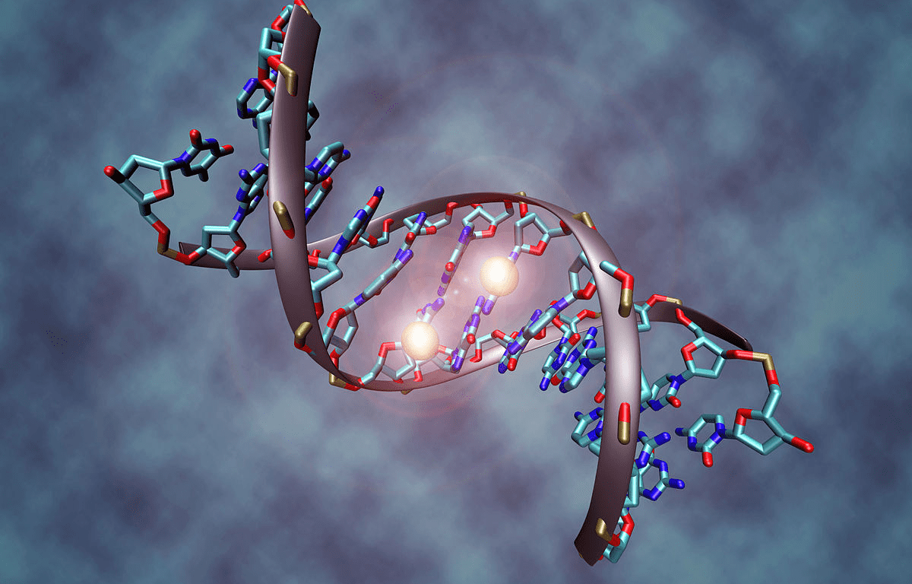
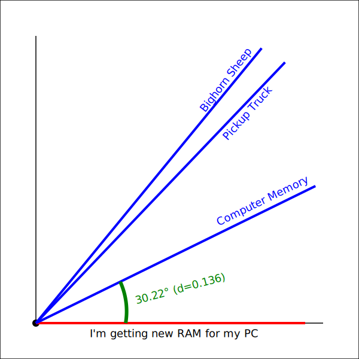
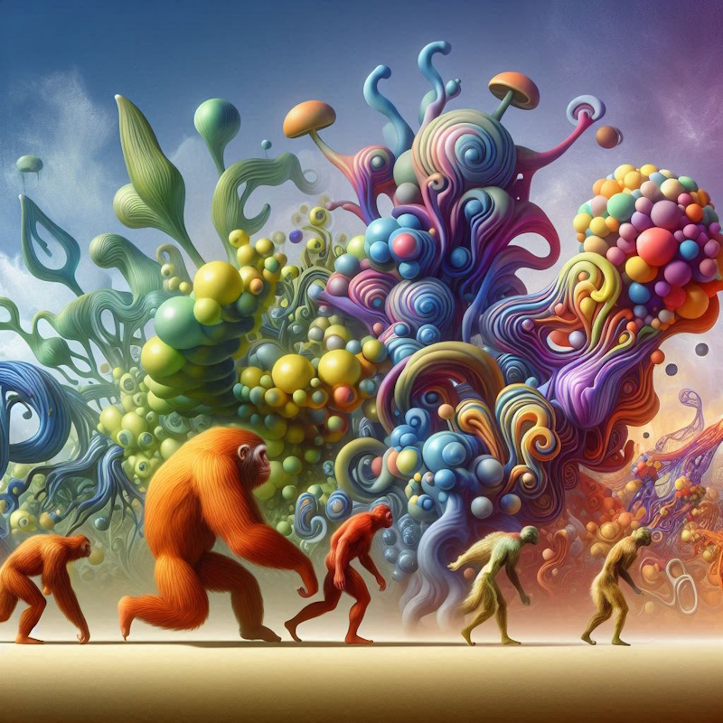

Solutions that EvolveBuilding Self-Improving Systemswith Genetic AlgorithmsBarry S. StahlPrincipal Engineer - AZNerds.net@bsstahl@cognitiveinheritance.comhttps://CognitiveInheritance.com |
Favorite Physicists & Mathematicians
Favorite Physicists
Other notables: Stephen Hawking, Edwin Hubble, Leonard Susskind, Christiaan Huygens |
Favorite Mathematicians
Other notables: Daphne Koller, Grady Booch, Leonardo Fibonacci, Evelyn Berezin, Benoit Mandelbrot |
Fediverse Supporter
|

|
Some OSS Projects I Run
- Liquid Victor : Media tracking and aggregation [used to assemble this presentation]
- Prehensile Pony-Tail : A static site generator built in c#
- TestHelperExtensions : A set of extension methods helpful when building unit tests
- Conference Scheduler : A conference schedule optimizer
- IntentBot : A microservices framework for creating conversational bots on top of Bot Framework
- LiquidNun : Library of abstractions and implementations for loosely-coupled applications
- Toastmasters Agenda : A c# library and website for generating agenda's for Toastmasters meetings
- ProtoBuf Data Mapper : A c# library for mapping and transforming ProtoBuf messages
http://GiveCamp.org

Achievement Unlocked

Use Case: Game Strategy
Find the best strategy in a multi-player board game
|

|
Other Model Types
|
|
|
Genetic Algorithms
Find Solutions by Simulating Darwinian Evolution
- Each candidate solution is defined by its properties (chromosomes)
- A fitness function is used to determine which solutions "survive"
- A simulation may be used as the fitness function
- Surviving solutions may mutate and evolve other solutions
Optimality is Never Guaranteed
- Optimal solution may never be found
- i.e. If a optimality requires a large combination of elements
- Optimum may be found but not recognized
- If conditions make that solution non-optimal at that moment
- i.e. If a key feature is not used during the simulation
- Minimize the liklihood by increasing simulation size
- If conditions make that solution non-optimal at that moment
Determine Our Game Strategy
|
|
Step 1 - Define DNA
A chromosome represents all of the possible decisions that can be made
Each gene represents a decision
- Ideally a gene fully describes a single game state
- If no decision is possible for a state, there is no gene for that state
An allele is an option for that decision
- If there are 3 options for a given state there will be 3 possible alleles for that gene
DNA of Chutes & Ladders

Step 2 - Setup Parameters
|
|
|
|
Genetic Algorithm

Step 3 - Run the Simulations
Options for Experimentation
Implement in your preferred language
- C# implementation is on GitHub
Augment to include what place the player is in
- i.e. Might make different decisions if started 1st vs 6th
Augment to include opponent locations
- i.e. Might make different decisions if opponents are close to the end
Define the DNA of another game
- Recommendation - stick with simpler games to start
- Avoid games like chess with massive complexity
Problem 2 - Semantic Distance
Embeddings
|

|
3-D Space Projected into 2-D


Cosine Similarity & Distance
Note: For normalized vectors, cosine similarity is the same as the dot-product |

|
Cosine Distance

Cosine Distance
Embedding Distance
| Feature | Example |
|---|---|
| Synonym | "Happy" is closer to "Joyful" than to "Sad" |
| Language | "The Queen" is very close to "La Reina" |
| Idiom | "He kicked the bucket" is closer to "He died" than to "He kicked the ball" |
| Sarcasm | "Well, look who's on time" is closer to "Actually Late" than "Actually Early" |
| Homonym | "Bark" (dog sound) is closer to "Howl" than to "Bark" (tree layer) |
| Collocation | "Fast food" is closer to "Junk food" than to "Fast car" |
| Proverb | "The early bird catches the worm" is closer to "Success comes to those who prepare well and put in effort" than to "A bird in the hand is worth two in the bush" |
| Metaphor | "Time is money" is closer to "Don't waste your time" than to "Time flies" |
| Simile | "He is as brave as a lion" is closer to "He is very courageous" than to "He is a lion" |
Modeling Exercise
Design a system to find words/phrases that are far apart (semantically different) in the embedding space?
Assumptions
- No db of embeddings available to search
- Limited understanding of the features of the embedding space
- i.e. changing language changes nearly every dimension
What type of models might work?
- Can we do it logically?
- Can we brute-force it?
- Are there hybrid approaches?
What are the features of each model?
How do we execute the model(s)?
Possible Genes
Categorical
- Part of Speech (noun, verb, etc)
- Register (formal, slang, technical, etc)
- Morphology (root, compound, phrase)
- Animacy (inanimate, animate, agentic, collaborative)
- Scientific Discipline (biology, physical, life/health, etc)
Continuous
- Polarity (negative -> positive)
- Idiomaticity (literal -> idiomatic)
- Concreteness (abstract -> concrete)
Other Options
- Language
Mapping Strategies
We need to find what should change in order to identify a word distant from the current one
- Part of Speech: Noun -> Adverb
- Discipline: Software Engineering -> Philosophy
- Polarity: Neutral -> Highly Positive
Linguistic Agent - System Prompt
You are a simulation of a great linguist. You classify words/phrases within the following categories:
- Part of Speech (noun, verb, etc)
- Register (formal, slang, technical, etc)
- Scientific Discipline (biology, physical, life/health, etc)
- Morphology (root, compound, phrase)
- Animacy (inanimate, animate, agentic, collaborative)
- Polarity (highly negative, negative, neutral, positive, highly positive)
- Idiomaticity (highly literal, literal, idiomatic, highly idiomatic)
- Concreteness (highly abstract, abstract, concrete, highly concrete)
Your job is to identify words/phrases that meet the requested characteristics. You respond only with the requested word or phrase in lower case.
Linguistic Agent - User Prompt
Give me a word or phrase with the following characteristics:
- Primary part of speech is verb
- Register is technical
- Morphology is phrase
- Animacy is collaborative
- Scientific Discipline is biology
- Polarity is highly negative
- Idiomaticity idiomatic
- Concreteness highly concrete
and is not in the following list: "prime genius", "engineer a cooperative symbiosis".
Be sure to only respond with the selected word or phrase, no ceremony.
What Else Can We Do with Our Linguistic Genome?
Once we can encode the traits of a word/phrase/idea, what other fitness functions could we apply?
- The DNA defines the traits of the specific organism (candidate)
- The Fitness Function defines the direction of evolution
Linguistic Genome Experiments
|
 |
Commonalities
We discussed 2 problems:
- Game strategy - what's the best move given game state?
- Semantic Distance - what word should I test next?
What do they have in common? What makes them good candidates for genetic algorithms?
Summary
- Genetic Algorithms "Learn" by simulating Darwinian Evolution
- The "DNA" represents the decisions that can be made
- One chromosome per condition (game state)
- One gene per option (choices from a state)
- Several parameters control how solutions evolve
- Simulations per Generation - how often the solutions change
- Fewer simulations make it more likely a less-fit solution will survive over a more-fit solution
- Error (misspelling) rate - how often each chromosome changes between generations
- Higher rates cause greater variations from generation to generation
- Selection strategy - Which solutions survive and mutate
- Survive intact - Remain unchanged to next generation
- Survive mutated - Modified versions survive to next generations
- Survive recombined - Crossover between two solutions survives
- Simulations per Generation - how often the solutions change
Resources

|
Appendix
Simulates A Rational Actor
|
Models are the Blueprint
|
The success of a problem-solving algorithm is often determined before the algorithm even runs -- by how the problem is modeled |

|
Modeling
|
|
|